FireRatShader
The single shader that does everything — for every Unity project. Hundreds of effects, lighting models, and tools in one master shader per render pipeline. Built for VR, mobile, and desktop.
130+ looping captures from the demo scenes
Hover a tile to play it. Every capture is recorded from the demo scenes that ship with the optional demo package.
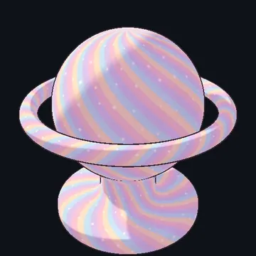
Toon Soft Anime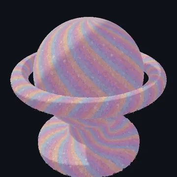
Shell Fur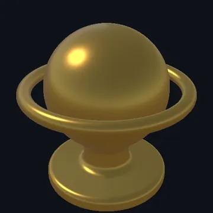
Hammered Gold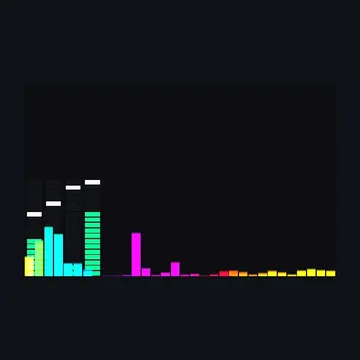
EQ Bars + VU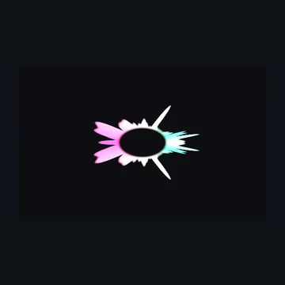
Radial Spectrum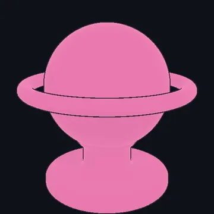
Emission Pulse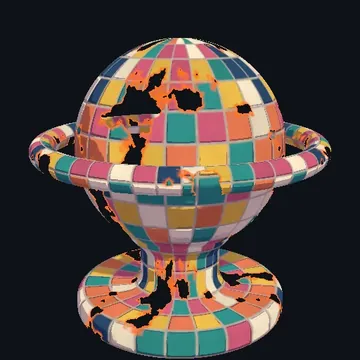
Dissolve Burn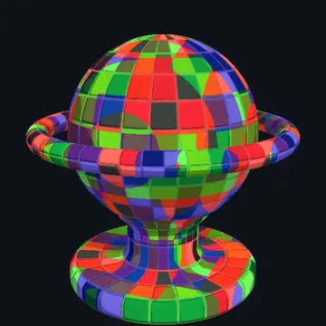
Channel Shift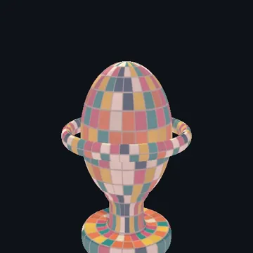
Vortex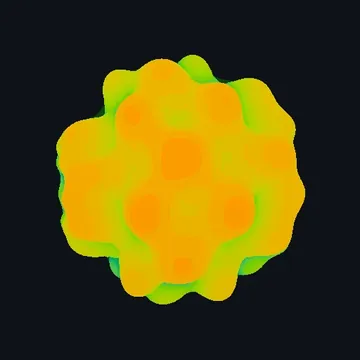
Mandelbulb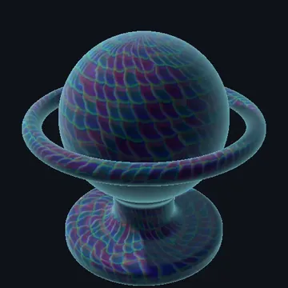
Crystal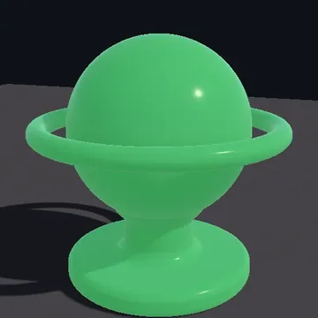
Subsurface JadeWhy FireRatShader?
Most shaders force you to choose: feature-rich but slow, or fast but limited. FireRatShader refuses that compromise.
One shader, every pipeline
True 100% feature parity between Built-in (BRP) and URP. Same properties, same inspector, same look. Switch render pipelines without rebuilding your materials.
Born for VR and mobile
Optimized for Meta Quest, SteamVR, and standalone Android. The Material Lock optimizer physically strips unused passes and dead variants at lock time — what ships is exactly what you use.
AudioLink, done right
Four emission layers, spectrum and waveform visualizers, raymarched fractals, and dozens of effects all driven by AudioLink. Test audio reactivity without entering Play Mode.
Everything you'd expect
14 surface styles, 5 lighting models, shell fur, decals, dissolve, glitch, refraction, outlines, parallax, VAT — 800+ properties, every one keyword-gated so disabled features cost zero GPU time.
What's inside
A quick taste — see FEATURES.md for the complete list.
By the numbers
Three performance tiers
FireRatShader ships with a built-in performance system so the same material scales from desktop VR down to low-end mobile.
| Tier | Target | Behavior |
|---|---|---|
| High | PC VR, Desktop | All features enabled |
| Medium | Quest, Mobile | Disables SSS, anisotropy, eye refraction |
| Low | Low-end Mobile | Disables distortion, parallax, and all Medium restrictions |
Get FireRatShader
FireRatShader is a commercial Unity asset. The shader itself is not included in this repository — only the documentation, marketing material, and community language packs.
FireRatShader is available now — purchase it on my Patreon page.